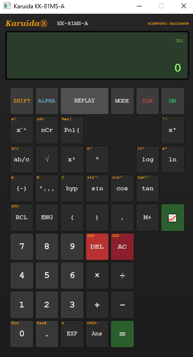
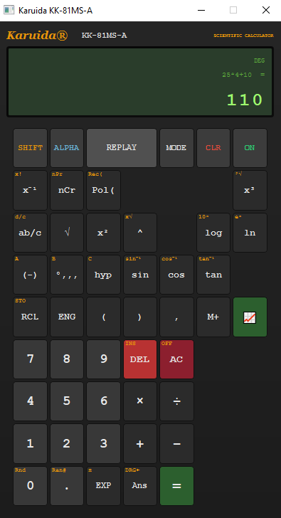
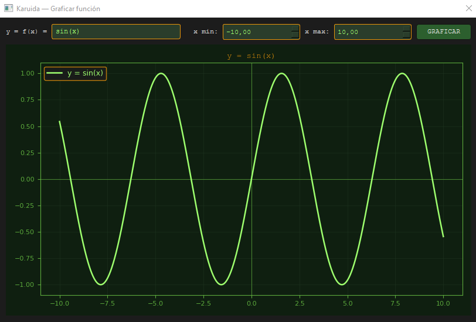

Aplicación de escritorio desarrollada con Python que simula el comportamiento de una calculadora científica real, incluyendo funciones matemáticas avanzadas, interfaz gráfica personalizada y graficación de funciones.
Este proyecto consiste en una calculadora científica desarrollada en Python con interfaz gráfica, diseñada para replicar tanto la experiencia visual como funcional de una calculadora real. La aplicación permite resolver operaciones básicas y avanzadas, utilizar funciones científicas y visualizar funciones matemáticas mediante gráficos.
El desarrollo incluye una interfaz visual personalizada, pantalla tipo LCD, botones con estilos propios, manejo de operaciones matemáticas, memoria, modos angulares y una ventana adicional para graficar funciones.
Aplicar conceptos de programación, lógica matemática e interfaces gráficas para construir una aplicación funcional que combine cálculo, diseño visual y visualización de datos matemáticos.
La calculadora combina una interfaz gráfica personalizada con lógica matemática para interpretar, resolver y visualizar operaciones de forma dinámica.
El usuario interactúa con una interfaz visual similar a una calculadora científica real, ingresando operaciones matemáticas mediante botones personalizados.
La aplicación interpreta la expresión ingresada, transforma la sintaxis matemática cuando es necesario y ejecuta el cálculo utilizando lógica programada en Python.
El resultado se muestra en una pantalla tipo LCD, manteniendo una experiencia visual coherente con el diseño de una calculadora física.
El sistema permite ingresar funciones matemáticas, definir un rango para el eje X y visualizar el resultado gráficamente mediante Matplotlib.
Capturas reales de la aplicación en funcionamiento, incluyendo la interfaz principal, una operación resuelta y la visualización gráfica de funciones.


